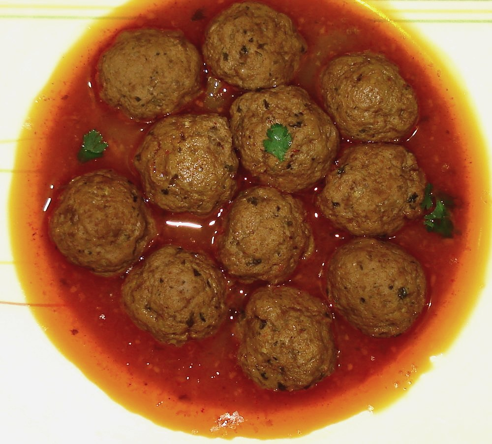

Ball Curry
beef meatballs poached in a thin red coconut gravy, the Sunday lunch of Calcutta Anglo-Indian homes

Contains: milk, gluten, egg
Checked against the ingredient list for ten allergens: milk, egg, fish, crustaceans, tree nuts, peanuts, sesame, mustard, soy and gluten. Brands vary, so read the label on anything new to you.
Ingredients
Quantities for 4.
- 500g, finely minced Beefmutton mince works equally well
- 2 slices, crusts off Breadthe binder; soak it and squeeze it dry
- 4 tbsp, for soaking the bread Milk
- 1, beaten Eggs
- 3 medium: 1 grated for the balls, 2 sliced for the gravy Onion
- 1 tbsp paste Ginger
- 1 tbsp paste Garlic
- 2, finely chopped Green Chillioptional
- 3 tbsp, chopped Coriander Leaves
- 1 tsp Black Pepper
- 1.5 tsp Chilli Powderkashmiri chilli if you want the colour without the heat
- 3/4 tsp Turmeric
- 1 tbsp Coriander Powder
- 1 tsp Cumin Powder
- 2, chopped Tomato
- 250ml Coconut Milk
- 2, quartered Potatotraditional, and they soak up the gravyoptional
- 3 tbsp Neutral Oil
- 400ml Water
- to taste Salt
Cookware
stovetop
Before you start
- Soak the bread in the milk for 5 minutes, then squeeze it almost dry before working it into the mince. Wet bread makes balls that fall apart.
- Chill the shaped balls for 20 minutes before they go into the gravy; cold balls hold together far better.
- Have the gravy simmering before you start dropping the balls in, so they set on contact rather than sitting in warm liquid.
Method
- Mix the mince with the squeezed bread, beaten egg, grated onion, half the ginger-garlic paste, the chopped green chilli, 2 tbsp coriander leaves, the black pepper and 1 tsp salt.Mix with your hand until it just comes together. Overworking makes the balls rubbery.
- Roll into balls the size of a walnut, about 20 of them, and chill 20 minutes.
- Heat the oil in a wide pan and cook the sliced onion until soft and gold, 10 to 12 minutes.
- Add the remaining ginger-garlic paste and fry 2 minutes.
- Add the chilli powder, turmeric, coriander and cumin powders with a splash of water and fry 2 minutes until the oil takes on colour.
- Add the tomato and cook until it collapses and the oil separates at the edges, 7 to 8 minutes.
- Pour in the water, add the potato and salt, and bring to a steady simmer for 10 minutes.
- Lower the balls in one at a time. Do not stir for the first 5 minutes; shake the pan instead.Stirring too early is how ball curry becomes mince curry.
- Simmer uncovered 15 minutes, turning the balls gently once, until they are firm and cooked through.
- Stir in the coconut milk and simmer very gently 5 more minutes. Check the salt, scatter the remaining coriander leaves and serve with yellow coconut rice.Never let it boil after the coconut milk goes in.
Storage
Keeps 3 days refrigerated and tastes better the next day. Reheat gently in a pan, not a microwave, so the balls stay whole. Freezes for a month.
Nutrition Good estimate
High protein: 36 g a serving, 27% of the calories
| Per serving479 g | Per 100 g | |
|---|---|---|
| Calories | 544 kcal | 114 kcal |
| Protein | 36.2 g | 8 g |
| Carbohydrate | 32.9 g | 7 g |
| of which sugars | 7.1 g | 2 g |
| Fibre | 5.7 g | 1 g |
| Fat | 31.2 g | 6 g |
| of which saturated | 15.4 g | 3 g |
| of which unsaturated | 13.3 g | 3 g |
Worked out from the listed quantities; most of the ingredient list could be weighed. Estimated from raw ingredients using USDA FoodData Central. Cooking changes are not modelled, and added salt is excluded, so sodium is not given.
Written and checked against sources, not cooked in a test kitchen. Times, yields, allergens and nutrition are worked out rather than measured, so use your own judgement on doneness and on storing. More in About.